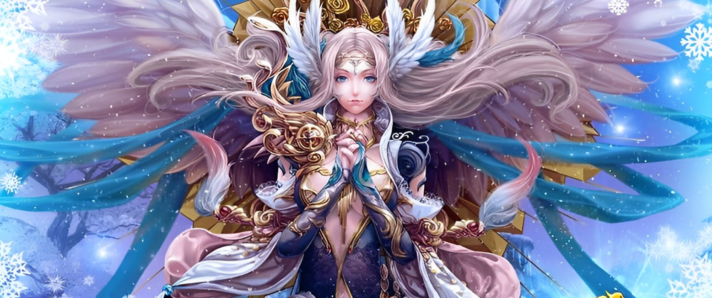
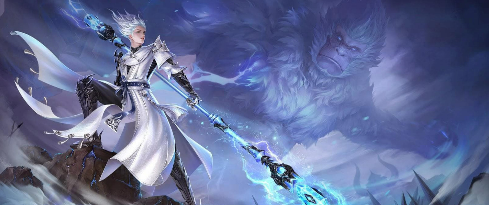

.jpg)
É dividido em cinco impérios: das Sombra, do Fogo, do Gelo, a Cidade do Dragão e, por fim, o Império da Luz, onde os jogadores enfrentarão os novos desafios do jogo. Após uma maldição, todos os impérios foram dominados pelas forças do mal, exceto as terras do Imperador Alexsander que foram salvas graças ao sacrifício do líder. Mas, após um grande período de paz, o Império da Luz está novamente ameaçado, dessa vez pelo filho adotivo do imperador, que foi treinado para ser seu braço direito, mas que bandeou para o lado das trevas e será oponente de Althea, imperatriz da luz.
Seguindo antigas fórmulas alquímicas, elas ainda conseguem imbuir alguns disparos com a fervente magia de fogo, garantindo assim que seus ataques trespassem eventuais resistências físicas.
Os Magos são mestres conhecidos por sua determinação na busca por novos conhecimentos arcanos, estes estudiosos são extremamente curiosos e nunca desistem de desvendar os mistérios do mundo.
Especialistas no combate corpo a corpo, estes Guerreiros representam a base para qualquer grupo de aventureiros. São famosos por sua força e resistência durante os combates.
Os Sacerdotes Alados são curandeiros. Preferem tratar das feridas causadas pela guerra com os Sem-Almas e atuar como um valoroso reforço nos grupos no qual atuam.
A precisão extraordinária dos Arqueiros, sua disciplina exemplar, assim como o respeito às tradições milenares de seus ancestrais, garantem grande prestígio à classe na sociedade dos Alados.
Em vez de virarem as costas para as divindades conforme elas eram esquecidas pelos mortais, os Paladinos preferiram dar as costas para o restante do mundo.
As Feiticeiras apenas conseguiram a igualdade perante os Bárbaros quando os enfrentaram. Para a surpresa dos machos da época, estas mortíferas fêmeas dominavam incríveis poderes ligados à natureza.
Bárbaros são guerreiros formidáveis, de força e agilidade dignas de seus ancestrais. Conseguem canalizar sua ferocidade e transformá-la em poder de batalha.
Os Selvagens são uma raça nascida na natureza e adaptável ao ambiente. Os Andarilhos são uma espécie menor de Selvagens, mas são fisicamente mais fortes e ágeis.
Os Arcanos representam a linha de frente do exército dos Guardiões. Dotados de uma perícia admirável quando portam espadas, estes campeões de Pan Gu aumentaram de maneira significativa suas habilidades de luta.
Os Místicos são devotos da terra e da natureza. Canalizam o fluxo de vida que vaga entre a flora e sabem como manipular esta energia para favorecer seus companheiros na guerra contra as forças malignas de Pan Gu.
Grandes estudiosos da arte da guerra, os Mercenários se orgulham de dominar as técnicas da luta com adagas e do combate corpo na corpo.
Estes Abissais são abençoados por manterem uma forte conexão com as energias existentes no mundo. Eles utilizam suas habilidades especiais tanto para aumentar o poder de luta.
Os Retalhadores são uma classe voltada para o combate corpo a corpo, que usa Sabres como armas e Armaduras Leves para proteção.
Os Tormentadores são uma classe com ataques mágicos à distância, que usa Foices como armas e Armaduras Arcanas para proteção. As habilidades desta classe são focadas em ataques mágicos.